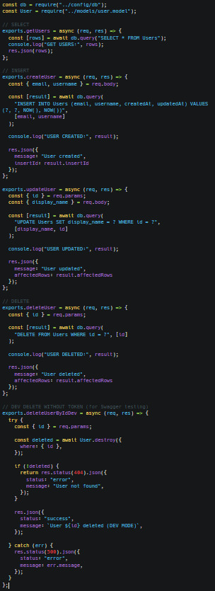
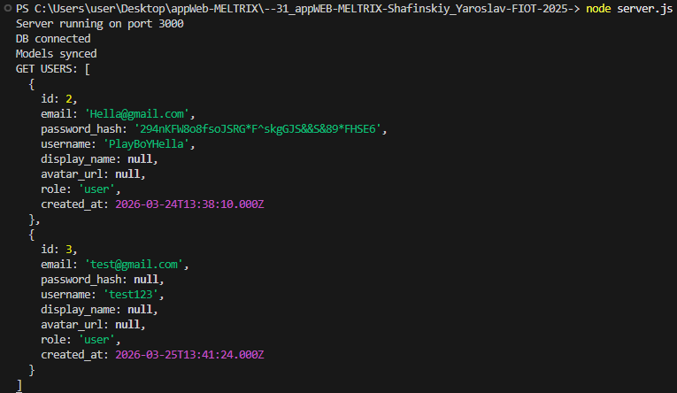
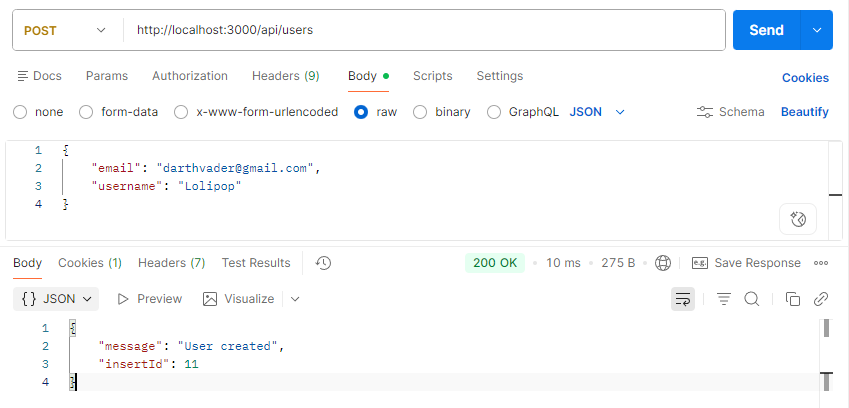
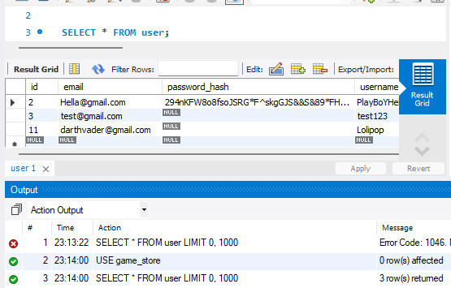
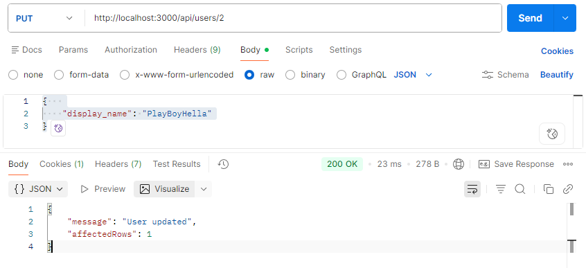
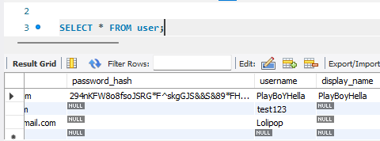
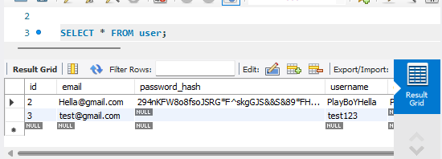

Зображення
Реалізація CRUD-операції
user.controller.js

Запит SQL SELECT, Postman GET + вивід у консолі
Зображення


Запит SQL INSERT, Postman POST + вивід у консолі та перегляд у mySQL
Зображення



Запит SQL UPDATE, Postman PUT + вивід у консолі
Зображення


Запит SQL DELETE, Postman DELETE + вивід у консолі
Зображення


